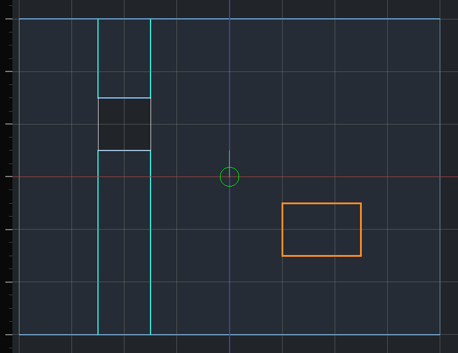
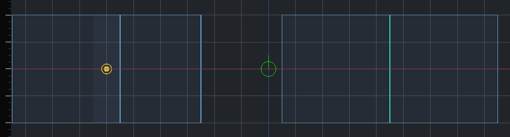

The carved world
A Hammerite map is carved, not built. Everything is solid rock until an air brush carves a room out of it. You never build walls around a room: the rock around it is the wall.

Solid by default
- Where nothing is drawn, there is rock. There is no void outside the level and no outer shell to seal.
- An air brush carves a room. Its inside is open space; its faces become the room's walls, floor and ceiling.
- A room is seen from inside. The outside of an air brush is rock and is never drawn.
The editor's default grid is 64 units.
The three tiers
Every brush has a tier: Air, Solid or Detail. Choose it in the toolbar before drawing, or change the tier of a selected brush. See Building.
| Tier | What it does | Use it for |
|---|---|---|
| Air | Carves open space out of the rock. | Rooms, corridors, doorways, windows, shafts, courtyards |
| Solid | Fills carved space back in. Can split a room. | Pillars, dividing walls, a beam across a hall |
| Detail | Stands inside a room as dressing. Carves nothing, fills nothing. | Furniture, trim, ledges, crates, cornices |
Air and solid are structural: they decide the shape of the space. Detail does not.
Rule of thumb: if it changes how spaces connect, it is structural. If it is dressing inside a space, it is detail.

Brush order
Structural brushes apply in the order they were made. A later brush wins where two overlap.
- A solid made after a room fills that part of it. This is how a pillar stands in a hall.
- A room made after a solid carves through it.
- A solid in rock that nothing has carved changes nothing: it is rock in rock.
Clipping a brush keeps its place in the order. A duplicate is a new brush and goes last.
Moving a brush along the order
Select it and use Edit → Bring to Front (Cmd Page Up) or Send to Back (Cmd Page Down). Front is last in the order, so it wins; back is first, so everything drawn since wins over it. Several brushes keep the order they were already in among themselves.
Tip: A pillar that does not appear was made before the room around it. Select it and Bring to Front.
For the case neither end covers — one brush between two others — the inspector's Overlap section gives the numbers themselves. Order is the one those two commands write. Priority is a different question: which room owns a spot two of them overlap on, where 0 works it out from their sizes and anything else says so outright, highest winning.
Both are for structural brushwork. Detail is dressing and an entity's brushes belong to the entity; neither takes part in the program, so neither is asked where it stands in one.
Hiding a brush takes it out of the world while it is hidden: a hidden room closes up, a hidden pillar is gone. Hiding a layer does not change the world, only the view. See Layers.
Overlap to extend, abut to divide
How two air brushes meet decides whether they are one space or two.
| How they meet | Result |
|---|---|
| Overlap: the brushes interpenetrate | One continuous space. The walls of each that lie inside the other are removed. There is no opening to name. |
| Abut: faces touch on the same plane | Two rooms. Where the two faces overlap there is an opening, a portal, that can be named and closed by a door. |
| Gap: rock left between them | Two rooms, not connected. |
Overlap to extend a space: an alcove, a bay window, an L-shaped hall from two boxes. Abut to divide one: a doorway between two rooms, a window from a room onto a courtyard.

Sound and navigation follow the same split. Overlapping rooms are one acoustic zone. Abutting rooms are two, joined through the opening. See Rooms and portals.
To make a doorway a door can close, abut it: carve the doorway as its own air brush whose ends touch both rooms, flush with their walls. A doorway pushed into the rooms overlaps them and becomes part of one space.
Two rooms whose walls are less than one unit apart are flagged as Rooms that nearly touch: a sliver of rock too thin to be a wall. Abut them or overlap them. See Problems.
Who owns an overlap
Where two rooms overlap, the bigger room owns the shared space and draws the surfaces the two share. A floor where two overlapping rooms meet at the same height is textured by the bigger room.
Two overlapping rooms of exactly equal size are flagged as Rooms that overlap ambiguously. Resize one so the owner is the one you chose.
Detail is dressing
Detail renders, collides, is lit by the bake and casts shadows. It does not carve, split a room or make an opening.
- Blocking a doorway with detail does not disconnect the rooms. Use a solid, or leave the rooms apart.
- A detail face pressed flat against a wall, a floor or other detail is not drawn or baked, which saves lightmap space. It still collides.
- Brushwork that belongs to an entity is always detail. See Entities.
- Terrain is detail.
Toggle Detail Tint in the 3D viewport's menu to see which brushes are detail.
Faces point out of their own brush
Every face points away from the brush it belongs to. On an air brush that means into the rock. A room's floor is its bottom face, pointing down; its ceiling is its top face, pointing up.
Texture a room by texturing its air brush's faces, seen from inside. A solid pillar's faces point out into the room around it. See Texturing.
What is worked out, and what you author
Rooms, openings and the walls you see are recomputed after every edit. Nothing is set on them directly. What you author lives on a brush, a face or an entity, and survives any edit.